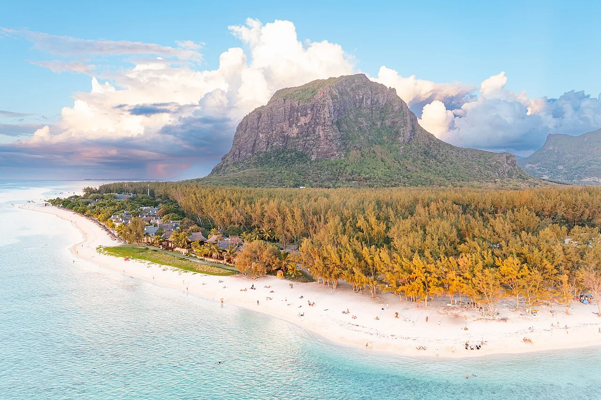
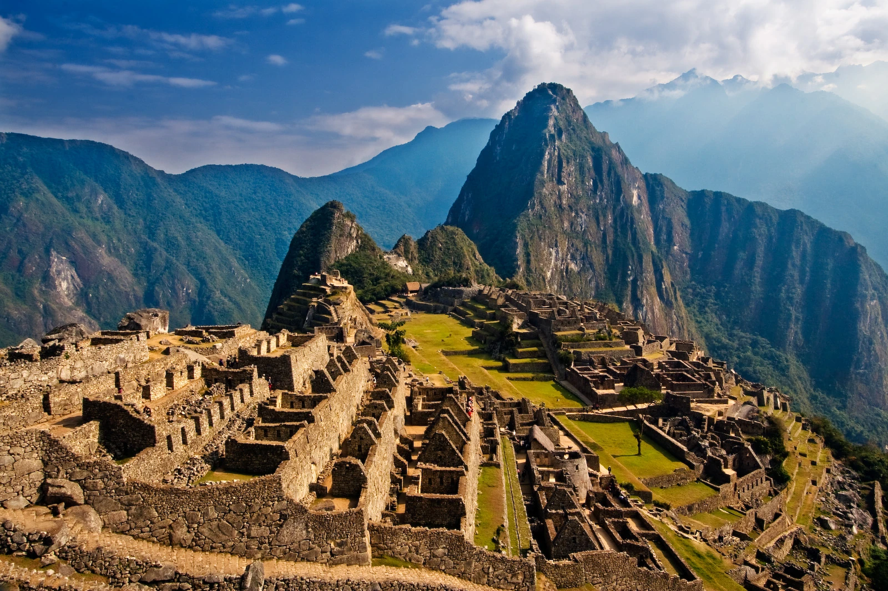
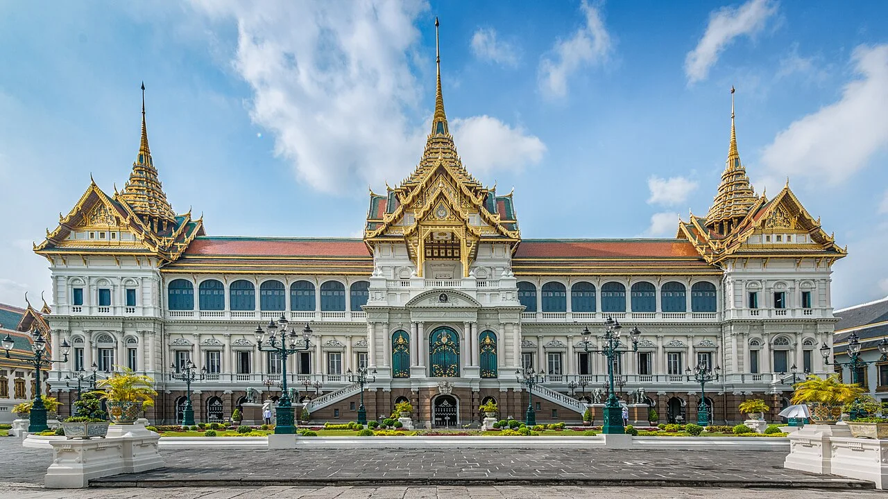
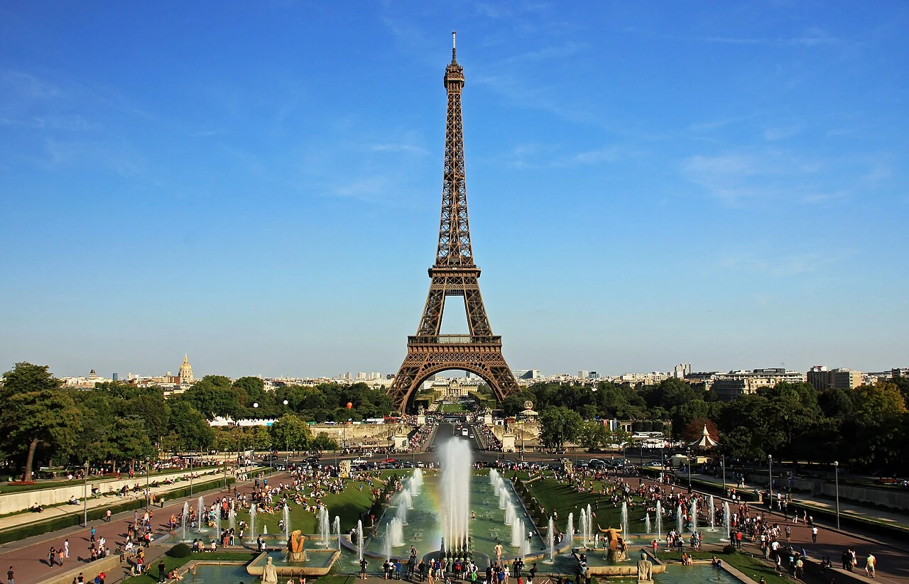
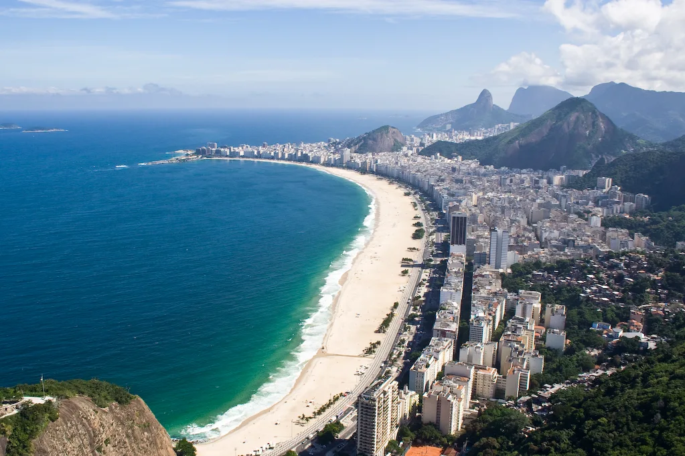
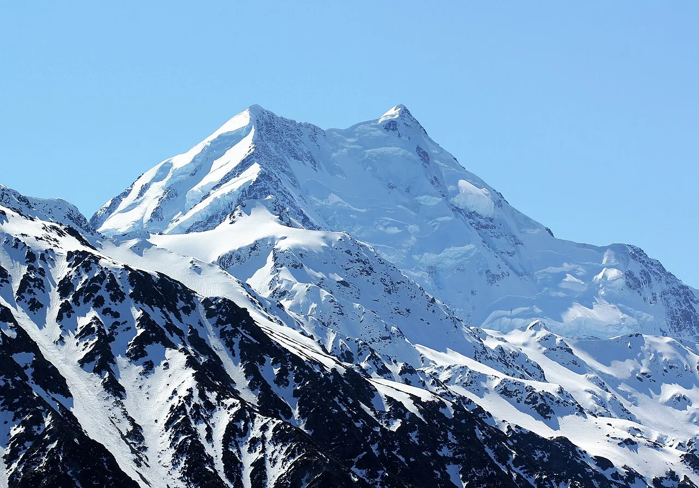
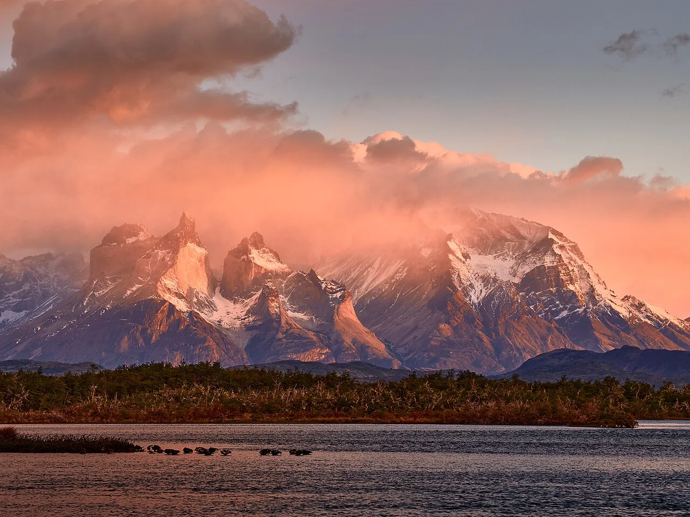
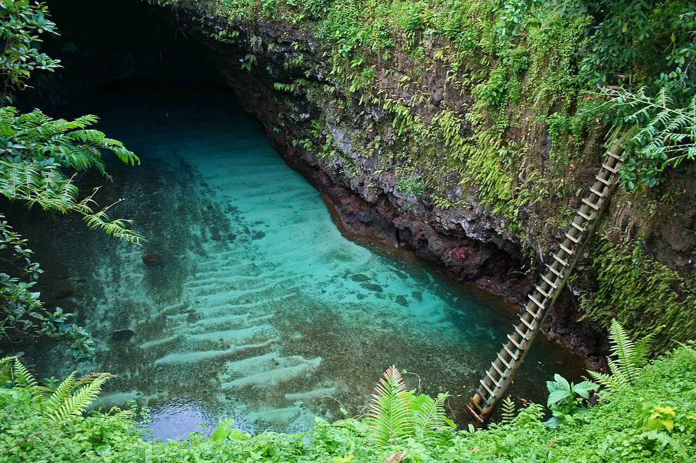
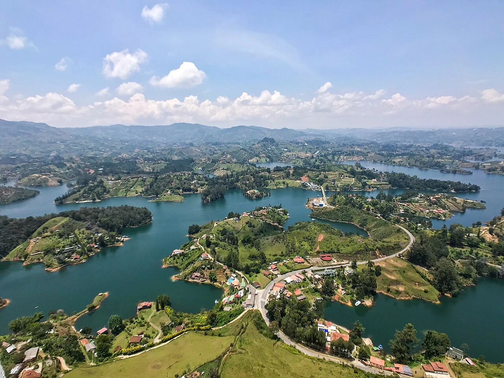

Choose a continent to explore

Start with a continent. Follow your curiosity.
Map data by Natural EarthA world to discover
Go somewhere.
Feel something new.
From a first taste of street food to a view you will never forget. Discover the places, people, and experiences that make a journey yours.

This time, Mauritius
A little island.
A lasting impression.
A place for slow mornings beside the Indian Ocean, forest walks, and flavors shaped by many cultures. Here are three reasons to begin with Mauritius.
-
A coast worth exploring
Discover the lagoon and mountain landscape around Le Morne.
-
Nature beyond the beach
Head inland to the forests and viewpoints of Black River Gorges.
-
A taste of island life
Get to know the markets of Port Louis and local favorites such as dholl puri.
Let a place surprise you
A world of places to begin.
31 countries. Swipe or scroll sideways to find your next stop.

Africa
Cameroon
Volcanic mountains, coastal waterfalls and living royal heritage.

Asia
Japan
Temple paths, city lights and regional flavours.

Europe
Italy
Ancient streets, Renaissance art and regional flavors.

South America
Peru
Andean stonework, coastal flavours and living traditions.

North America
Canada
Historic riverfronts, striking skylines and room to roam.

Oceania
Fiji
Island reefs, garden paths and shared cultural traditions.

Africa
Ghana
Coastal history, forest canopies and the energy of Accra.

Asia
Thailand
Riverside temples, historic capitals and regional Thai cooking.

Europe
France
Art-filled cities, Alpine slopes and a taste of regional France.

South America
Brazil
Coastal cities, forest landscapes and the rhythms of samba.

North America
United States
Big-city energy, vast landscapes and regional stories.

Oceania
Australia
Harbour cities, coral reefs and ancient connections to Country.

Africa
Mauritius
Island lagoons, forest trails and the flavours of Port Louis.

Asia
Vietnam
Limestone waterways, living craft traditions and memorable street food.

Europe
Spain
Gaudí's curves, Andalusian courtyards and lively local tables.

South America
Argentina
Tango streets, Andean vineyards and Patagonia's vast landscapes.

North America
Mexico
Ancient cities, vivid art and flavors rooted in place.

Oceania
New Zealand
Māori heritage, alpine scenery and imaginative journeys.

Africa
Tanzania
Serengeti plains, volcanic highlands and Zanzibar's Swahili coast.

Asia
India
Mughal monuments, living bazaars and regional journeys.

Europe
Portugal
Atlantic light, tiled streets and a soundtrack of fado.

South America
Chile
Desert skies, Pacific culture and Patagonia's granite peaks.

North America
Costa Rica
Cloud forests, volcanic landscapes and a pura vida welcome.

Oceania
Samoa
Volcanic landscapes and the living traditions of Fa'a Samoa.

Africa
Kenya
Wildlife plains, Rift Valley scenery and Swahili coastal heritage.

Asia
Indonesia
Island volcanoes, royal Java and remarkable temple landscapes.

Europe
Greece
Ancient stones, island coves and tables made for sharing.

South America
Colombia
Caribbean fortresses, mountain cities and many regional flavours.

North America
Jamaica
Reggae roots, waterfall country and Caribbean flavor.

Oceania
Vanuatu
Blue holes, island coastlines and the traditions of kastom.

Africa
South Africa
Cape mountains, wildlife country and stories that shape a nation.
Every continent.
Your own way.
Choose a region and find a new starting point.